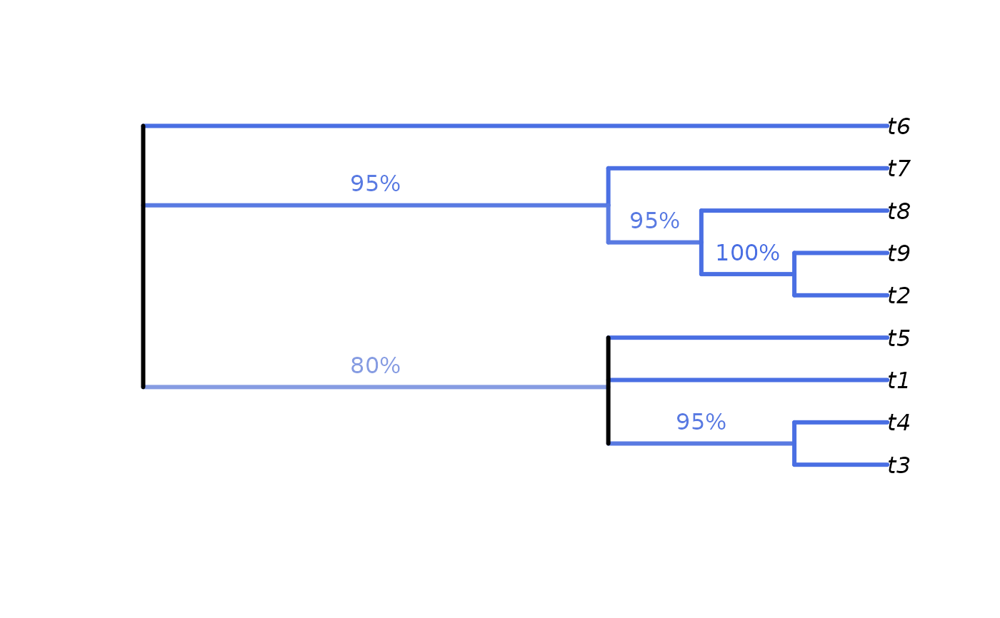
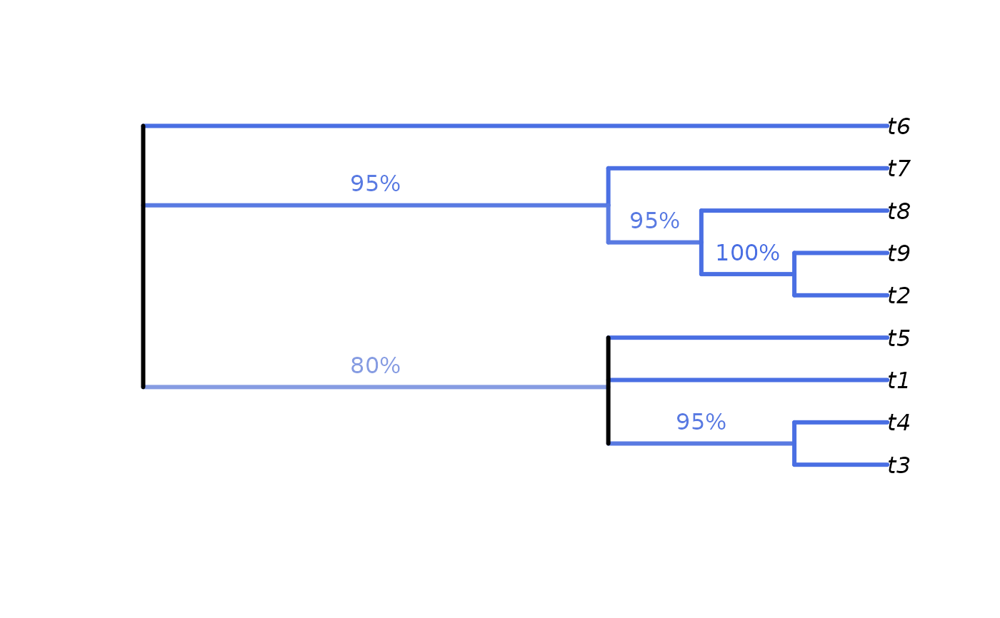

Colour value with which to display node support.
Arguments
- support
A numeric vector of values in the range 0–1.
- show1
Logical specifying whether to display values of 1. A transparent white will be returned if
FALSE.- scale
101-element vector listing colours in sequence. Defaults to a diverging HCL scale.
- outOfRange
Colour to use if results are outside the range 0–1.
Value
SupportColour() returns the appropriate value from scale,
or outOfRange if a value is outwith the valid range.
See also
Use in conjunction with LabelSplits() to colour split labels,
possibly calculated using SplitFrequency().
Examples
SupportColour((-1):4 / 4, show1 = FALSE)
#> [1] "red" "#D33F6A" "#E495A5" "#E2E2E2" "#9DA8E2" "#ffffff00"
# An example forest of 100 trees, some identical
forest <- as.phylo(c(1, rep(10, 79), rep(100, 15), rep(1000, 5)), nTip = 9)
# Generate an 80% consensus tree
cons <- ape::consensus(forest, p = 0.8)
plot(cons)
 # Calculate split frequencies
splitFreqs <- SplitFrequency(cons, forest)
# Optionally, colour edges by corresponding frequency.
# Note that not all edges are associated with a unique split
# (and two root edges may be associated with one split - not handled here)
edgeSupport <- rep(1, nrow(cons$edge)) # Initialize trivial splits to 1
childNode <- cons$edge[, 2]
edgeSupport[match(names(splitFreqs), childNode)] <- splitFreqs / 100
plot(cons, edge.col = SupportColour(edgeSupport), edge.width = 3)
# Annotate nodes by frequency
LabelSplits(cons, splitFreqs, unit = "%",
col = SupportColor(splitFreqs / 100),
frame = "none", pos = 3L)

# Calculate split frequencies
splitFreqs <- SplitFrequency(cons, forest)
# Optionally, colour edges by corresponding frequency.
# Note that not all edges are associated with a unique split
# (and two root edges may be associated with one split - not handled here)
edgeSupport <- rep(1, nrow(cons$edge)) # Initialize trivial splits to 1
childNode <- cons$edge[, 2]
edgeSupport[match(names(splitFreqs), childNode)] <- splitFreqs / 100
plot(cons, edge.col = SupportColour(edgeSupport), edge.width = 3)
# Annotate nodes by frequency
LabelSplits(cons, splitFreqs, unit = "%",
col = SupportColor(splitFreqs / 100),
frame = "none", pos = 3L)
